🗺️ Comprendre Marseille rapidement

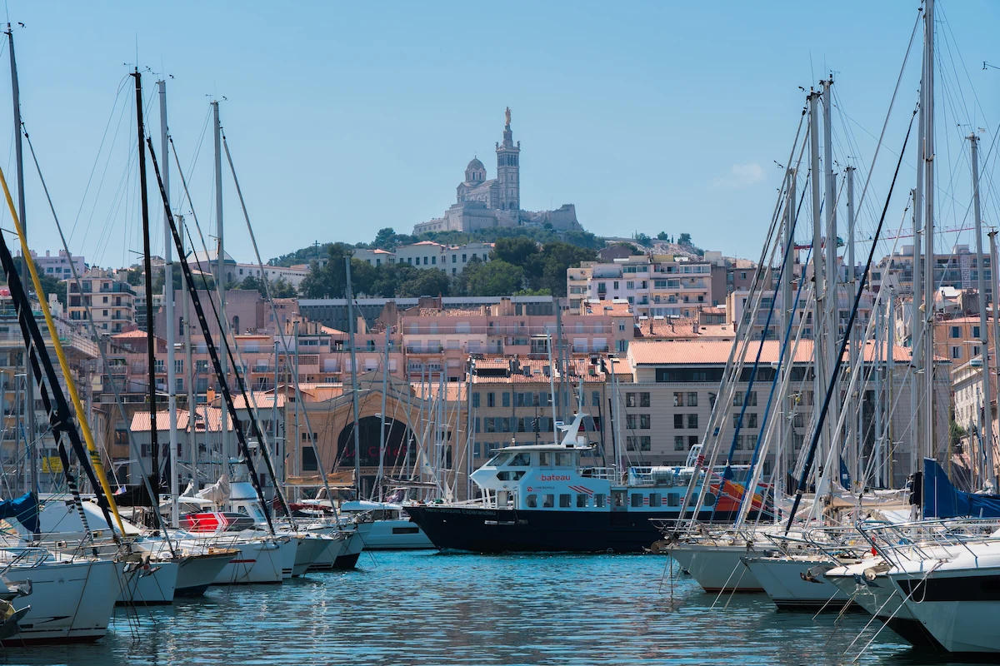
Navigue ou randonne entre les falaises calcaires et découvre des criques parmi les plus belles de Méditerranée.
Terrasses ensoleillées, marché aux poissons, bateaux et ambiance marseillaise du matin jusqu'au soir.
Balcons fleuris, street art, petites places et ruelles pleines de charme au cœur du plus vieux quartier de Marseille.
Depuis la Corniche Kennedy, les plages du Prado ou Notre-Dame de la Garde, profite d'un panorama exceptionnel sur la Méditerranée.
Marseille ne se résume pas à ses monuments. Elle se vit entre les eaux turquoise des Calanques, les traversées vers les îles du Frioul, les saveurs de la cuisine provençale, les panoramas à couper le souffle et l'ambiance unique qui règne autour de l'Orange Vélodrome. Des expériences qui révèlent toute l'âme de la cité phocéenne.
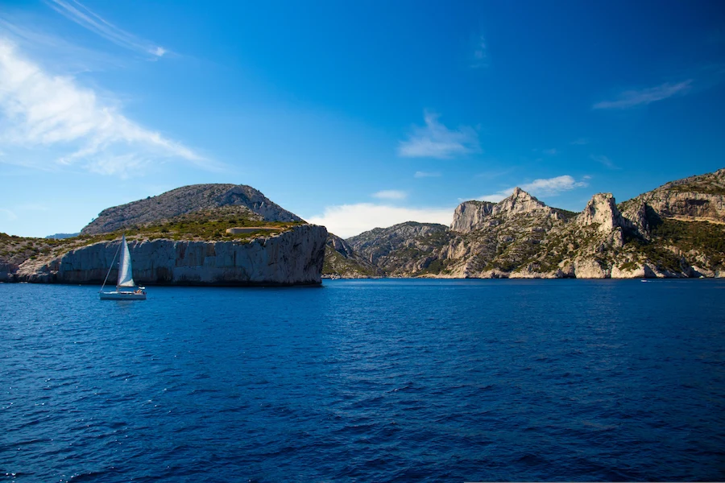
Embarque pour une croisière au cœur du Parc national des Calanques et découvre des falaises spectaculaires, des criques aux eaux cristallines et des paysages accessibles uniquement par la mer. Une baignade dans ce décor exceptionnel restera sans doute le plus beau souvenir de ton séjour.
🛥️ Réserver la croisière →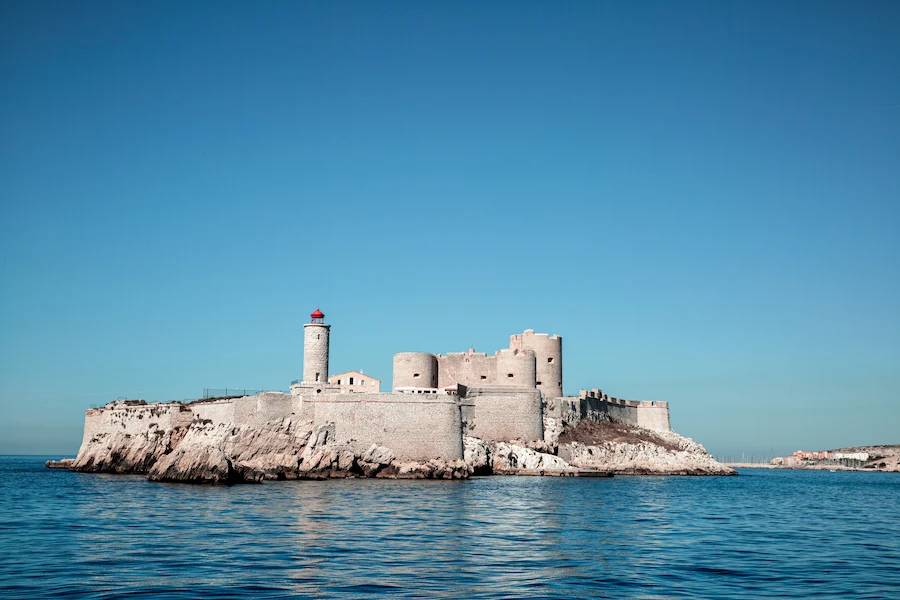
Navigue jusqu'au mythique Château d'If, immortalisé par Le Comte de Monte-Cristo, puis découvre les îles du Frioul et leurs criques sauvages. Entre histoire, patrimoine et paysages méditerranéens, cette escapade est l'une des plus belles au départ du Vieux-Port.
🏝️ Réserver l'excursion →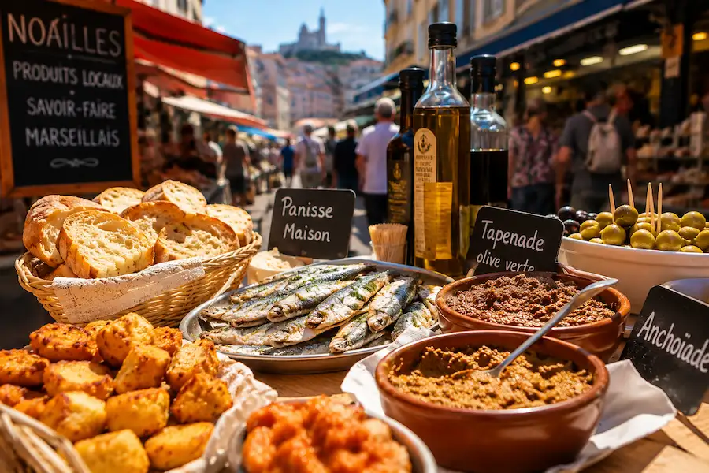
Découvre Marseille à travers sa gastronomie lors d'un food tour gourmand. Des spécialités provençales aux meilleures adresses locales, chaque dégustation raconte l'histoire d'une ville où la Méditerranée se retrouve dans toutes les assiettes.
🥘 Réserver le food tour →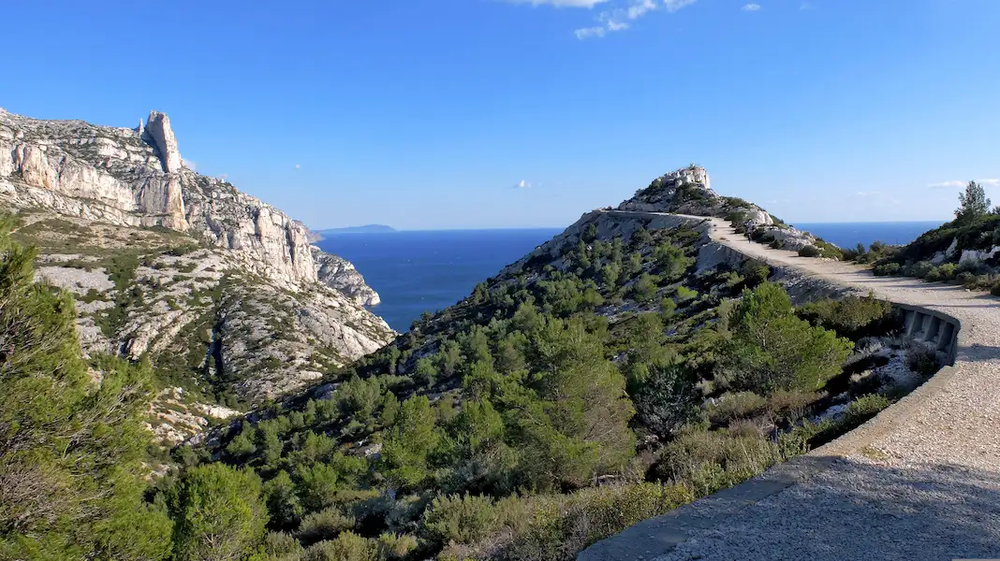
Parcours les sentiers du Parc national des Calanques et profite de panoramas spectaculaires sur les falaises blanches, la Méditerranée et les criques sauvages. Une immersion idéale pour découvrir le visage le plus naturel de Marseille.
🥾 Réserver la randonnée →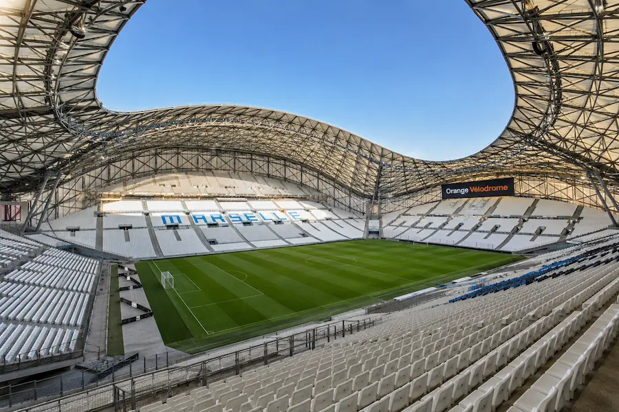
Entre dans l'un des stades les plus emblématiques d'Europe et découvre les vestiaires, le tunnel des joueurs et les coulisses de l'Olympique de Marseille. Une visite incontournable pour tous les passionnés de football.
⚽ Réserver la visite →Marseille se découvre entre métro, tramway, bus, marche et navettes maritimes. Pour profiter pleinement de la cité phocéenne, le plus simple est souvent de combiner transports en commun, balades à pied autour du Vieux-Port et excursions en bateau vers les îles ou les Calanques.
Le réseau RTM permet de se déplacer facilement dans toute la ville grâce au métro, au tramway, aux bus et aux navettes maritimes. Rejoins rapidement le Vieux-Port, Notre-Dame de la Garde, les plages du Prado, la Joliette ou Castellane, puis embarque vers l'Estaque, la Pointe Rouge ou les Goudes pour découvrir Marseille depuis la mer tout en évitant la circulation.
🚇 Découvrir les pass RTM →Autour du Vieux-Port, du Panier, de la Major, de la Joliette et du Mucem, la marche reste le meilleur moyen de découvrir Marseille. Les ruelles, les façades colorées, les escaliers et les petites places révèlent toute l'ambiance de la ville.
📍 Vieux-Port • Le Panier • Mucem • La Major • Joliette
Rejoins facilement le Vieux-Port, la gare Saint-Charles ou ton hôtel grâce à un transfert privé depuis l'aéroport Marseille Provence. Une solution confortable, idéale après un vol, avec des bagages ou pour un départ sans stress.
Réserver le transfert →Le cœur de Marseille. Entre les terrasses animées, les départs vers les Calanques, les restaurants de poissons et les quais historiques, c'est le meilleur choix pour découvrir la ville à pied.
Le plus ancien quartier de Marseille séduit avec ses ruelles colorées, ses places pleines de charme, ses ateliers d'artistes et son ambiance typiquement méditerranéenne. Idéal pour un séjour authentique.
À deux pas des plages, du parc Borély et de la Corniche Kennedy, le Prado est parfait pour profiter de la Méditerranée, se détendre et pratiquer des activités nautiques.
Un quartier moderne où se mêlent architecture contemporaine, centres commerciaux, le Mucem, la Cathédrale de la Major et les Terrasses du Port. Une excellente option pour un city break confortable.
Très bien desservi par le métro, Castellane permet de rejoindre facilement le Vieux-Port, les plages et l'Orange Vélodrome. Un quartier vivant apprécié pour son excellent rapport qualité-prix.
Pour un séjour face à la mer, difficile de faire mieux. Entre hôtels avec vue sur la Méditerranée, couchers de soleil spectaculaires et accès rapide aux plages, la Corniche offre l'un des plus beaux panoramas de Marseille.
Du charme historique du Panier aux hôtels avec vue sur la Méditerranée, en passant par l'animation du Vieux-Port ou les plages du Prado, chaque quartier offre une manière différente de découvrir Marseille selon ton budget et tes envies.
Marseille se découvre aussi dans l'assiette. Entre poissons fraîchement pêchés, terrasses face à la Méditerranée, cuisine provençale et adresses gourmandes, chaque repas devient une véritable expérience de voyage.
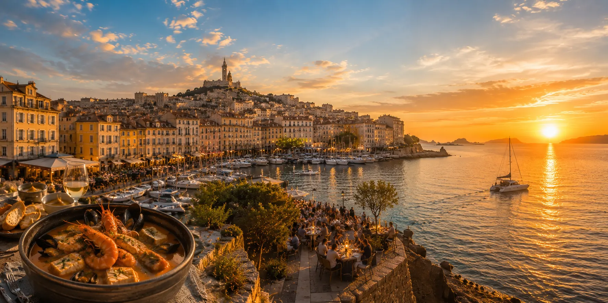
Préparée avec plusieurs poissons de Méditerranée, accompagnée de croûtons, de rouille et d'un bouillon parfumé, la bouillabaisse est bien plus qu'un plat : c'est une véritable institution marseillaise à savourer au moins une fois pendant ton séjour.
Installe-toi en terrasse face aux voiliers et aux bateaux de pêche pour déguster poissons grillés, fruits de mer et spécialités provençales dans l'une des plus belles cartes postales de Marseille.
Épices, pâtisseries orientales, cuisine libanaise, comorienne ou maghrébine… Le quartier de Noailles reflète toute la richesse culturelle de Marseille et invite à un véritable voyage culinaire.
Installe-toi à bord d'un catamaran, un verre à la main, pendant que le soleil embrase les falaises du Frioul. Entre buffet, baignade et panorama sur Marseille, cette soirée fait partie des souvenirs qui restent longtemps après le voyage.
⛵ Réserver la soirée →Pars à la rencontre des artisans, marchés et spécialités locales lors d'un food tour convivial. Une excellente façon de découvrir la cité phocéenne à travers ses saveurs et les histoires de ceux qui la font vivre.
🍽️ Réserver le food tour →Entre monuments historiques, musées emblématiques et lieux chargés d'histoire, Marseille dévoile plus de 2 600 ans de patrimoine. Ces visites incontournables permettent de mieux comprendre l'identité unique de la plus ancienne ville de France.
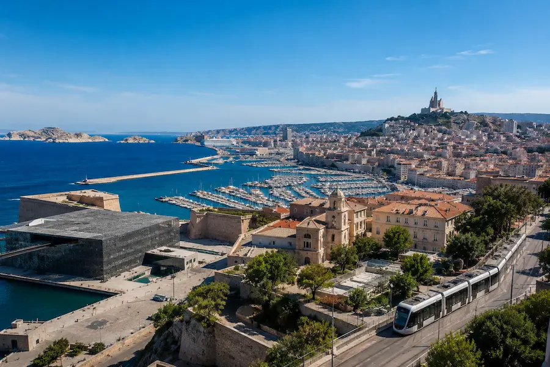
Le Marseille CityPass est la solution idéale pour visiter la ville tout en faisant des économies. Il inclut les transports en commun, le Mucem, le Château d'If, le train touristique, le bus panoramique, des visites guidées ainsi qu'un choix entre les îles du Frioul ou la Grotte Cosquer selon la formule choisie.
🎫 Découvrir →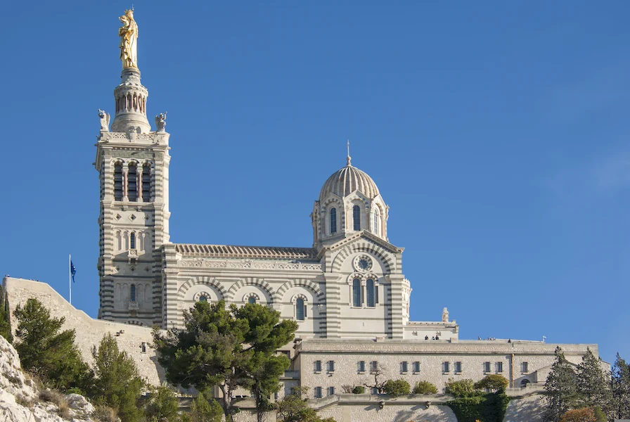
Surnommée « la Bonne Mère », la basilique domine Marseille depuis son promontoire et offre un panorama spectaculaire sur le Vieux-Port, les îles du Frioul et la Méditerranée. Un passage incontournable lors d'un séjour dans la cité phocéenne.
Rendu célèbre par Le Comte de Monte-Cristo d'Alexandre Dumas, le Château d'If se visite après une courte traversée en bateau depuis le Vieux-Port. Une découverte fascinante entre histoire, patrimoine et vues exceptionnelles sur Marseille.
🏰 Réserver la visite →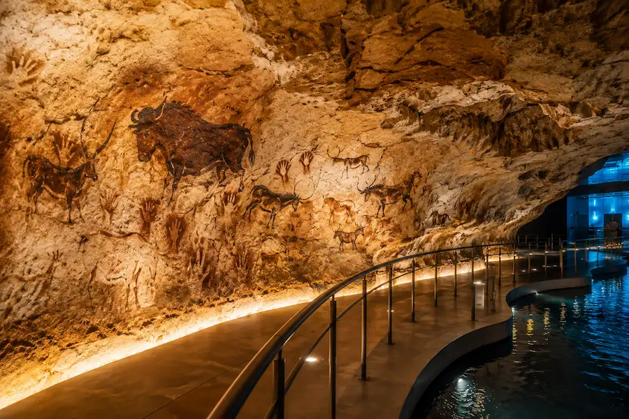
Découvre la reconstitution spectaculaire de la célèbre grotte préhistorique engloutie sous la Méditerranée. Grâce à un parcours immersif unique, remonte plus de 30 000 ans dans le passé et admire les peintures rupestres aujourd'hui inaccessibles au public.
🪸 Réserver la visite →Découvre les coulisses de l'un des stades les plus mythiques d'Europe. Vestiaires, tunnel des joueurs, bord de pelouse et histoire de l'Olympique de Marseille plongent les visiteurs dans l'univers du club le plus populaire de France.
⚽ Réserver la visite →À Marseille, le sport se vit avec passion. Entre l'OM, l'Orange Vélodrome, les plages, la mer, les Calanques et les grands événements populaires, la cité phocéenne transforme chaque moment sportif en expérience intense.
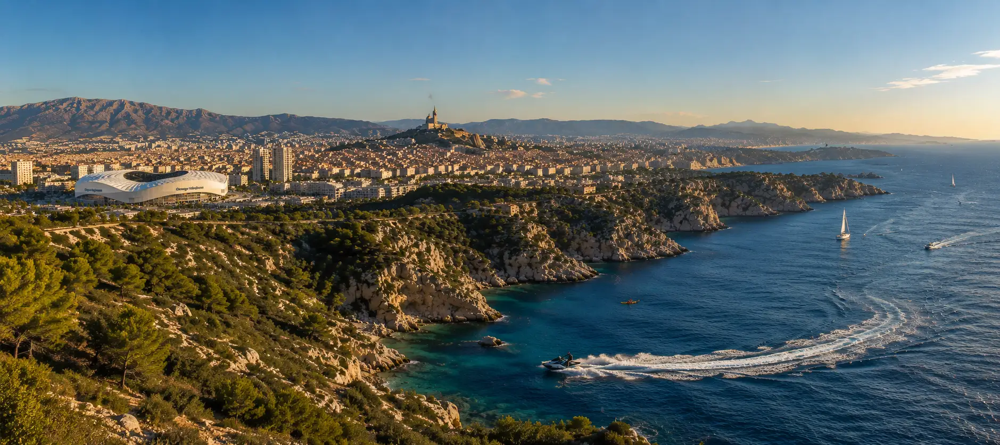
Assister à un match de l'Olympique de Marseille, c'est vivre l'une des ambiances les plus intenses du football français. Chants, tifos, ferveur populaire et stade en fusion font du Vélodrome une expérience marquante, même pour les voyageurs qui ne suivent pas le football.
Voir la billetterie OM →En dehors des soirs de match, découvre les coulisses du stade : vestiaires, tunnel des joueurs, bord de pelouse et histoire de l'OM. Une visite incontournable pour comprendre la place du football dans l'identité marseillaise.
Visiter le Vélodrome →Les Calanques offrent l'un des plus beaux terrains de randonnée de France. Entre falaises blanches, sentiers escarpés et vues plongeantes sur la Méditerranée, marcher ici devient une véritable aventure.
Réserver la randonnée →Pagaye au cœur des eaux turquoise de la Côte Bleue et découvre des criques sauvages accessibles uniquement par la mer. Entre falaises calcaires, baignades et paysages méditerranéens préservés, cette sortie en kayak est l'une des plus belles expériences outdoor à vivre autour de Marseille. :contentReference[oaicite:0]{index=0}
🌊 Réserver la sortie en kayak →Chaque automne, la course Marseille-Cassis rassemble des milliers de coureurs sur un parcours mythique de 20 km entre le stade Orange Vélodrome, le col de la Gineste, le Parc national des Calanques et la baie de Cassis. Un événement sportif emblématique du Sud.
Découvrir la course →Entre villages provençaux, vignobles réputés, calanques spectaculaires et espaces naturels préservés, les environs de Marseille offrent de magnifiques excursions à la journée pour découvrir toute la richesse de la Provence.
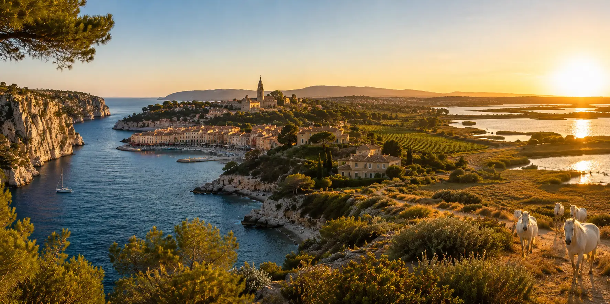
Avec son port pittoresque, ses falaises de Cap Canaille et ses eaux turquoise, Cassis est l'une des plus belles escapades à réaliser depuis Marseille. Cette excursion permet également de découvrir les ruelles élégantes d'Aix-en-Provence au cours de la même journée.
Réserver l'excursion →Ancienne capitale de la Provence, Aix-en-Provence séduit par ses places ombragées, ses fontaines, ses marchés et son atmosphère raffinée. Une destination idéale pour flâner entre patrimoine, gastronomie et art de vivre provençal.
Découvrir Aix-en-Provence →Admire les falaises calcaires, les criques secrètes et les eaux cristallines du Parc national des Calanques lors d'une excursion en bateau. Une expérience incontournable pour profiter pleinement du littoral méditerranéen.
Réserver la croisière →Pars à la découverte des célèbres vignobles de Bandol et de Cassis, rencontre des producteurs passionnés et déguste quelques-uns des meilleurs vins de Provence dans un cadre exceptionnel entre collines et Méditerranée.
Réserver la dégustation →Entre flamants roses, chevaux blancs, marais salants et paysages sauvages, la Camargue dévoile un visage unique de la Provence. Un safari en 4x4 permet d'approcher cette nature préservée et sa faune emblématique.
Découvrir la Camargue →Le français est la langue officielle. Dans les quartiers touristiques, de nombreux professionnels parlent également anglais, notamment dans les hôtels, restaurants et lieux de visite.
La monnaie utilisée est l'euro (€). Les paiements par carte bancaire sont acceptés presque partout, mais quelques marchés et petits commerces privilégient encore les espèces.
La France utilise les prises de type C et E avec une tension de 230 V. Aucun adaptateur n'est nécessaire pour la plupart des voyageurs européens.
Trois à quatre jours permettent de découvrir le Vieux-Port, les Calanques, Notre-Dame de la Garde, les principaux quartiers et de profiter d'une excursion autour de Marseille.
D'avril à juin et de septembre à octobre, les températures sont agréables et les sites touristiques sont moins fréquentés. L'été offre une ambiance animée mais attire davantage de visiteurs.
Comptez généralement entre 100 € et 220 € par jour selon votre hébergement, vos restaurants et les activités choisies. Les excursions en mer peuvent augmenter le budget.
Le soleil méditerranéen peut être très intense, surtout en été. Pense à emporter de l'eau, une casquette et de la crème solaire, notamment lors des randonnées dans les Calanques.
Les sentiers peuvent être exigeants et certains accès sont réglementés en raison du risque d'incendie. Vérifie toujours les conditions d'accès avant ton départ.
Le centre-ville est souvent encombré et le stationnement peut être difficile. Les transports en commun, la marche et les bateaux-navettes sont souvent plus pratiques.
Comme dans toutes les grandes villes touristiques, reste vigilant dans les zones très fréquentées comme le Vieux-Port, les transports et certains marchés.
Marseille révèle toute sa richesse en explorant ses quartiers, les Calanques, les îles du Frioul, Notre-Dame de la Garde ou encore les villages voisins comme Cassis et Aix-en-Provence.
Trois à quatre jours permettent de découvrir les principaux sites de la ville, les Calanques et de réaliser une excursion vers Cassis ou Aix-en-Provence.
Le printemps et le début de l'automne offrent un climat idéal pour profiter de la ville, de la mer et des randonnées tout en évitant les fortes chaleurs estivales.
Oui. Le métro, les tramways, les bus, les navettes maritimes et la marche permettent de découvrir facilement les principaux quartiers et attractions de la ville.
Oui, mais certains accès peuvent être temporairement fermés en été en raison du risque d'incendie. Il est conseillé de vérifier les conditions d'accès avant toute randonnée.
Le Vieux-Port constitue un excellent point de départ grâce à sa situation centrale, ses nombreux restaurants, ses transports et sa proximité avec les principaux monuments.
Marseille reste généralement plus abordable que Paris ou la Côte d'Azur. Les hébergements et les restaurants offrent un large choix pour tous les budgets.
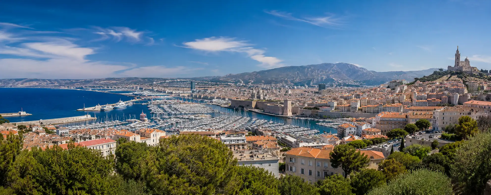